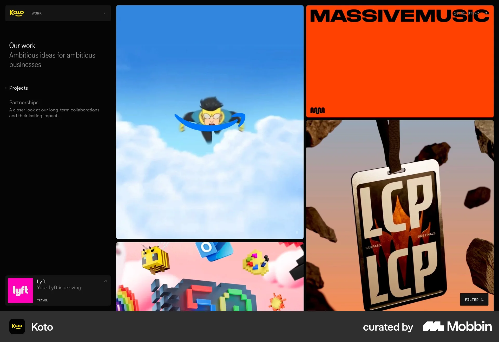
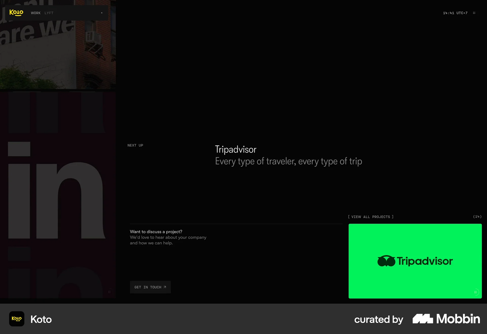
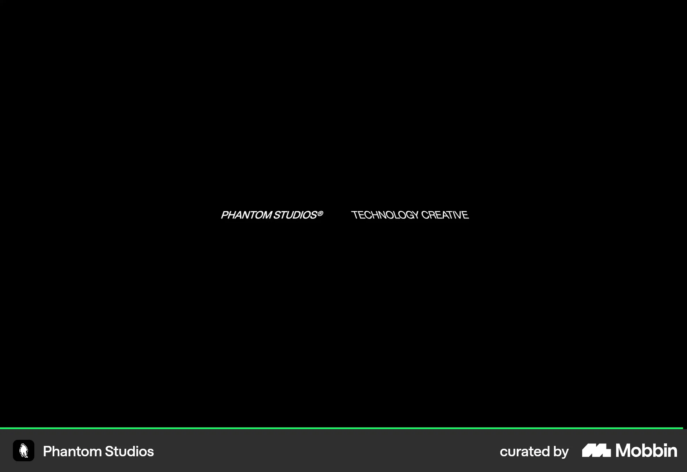
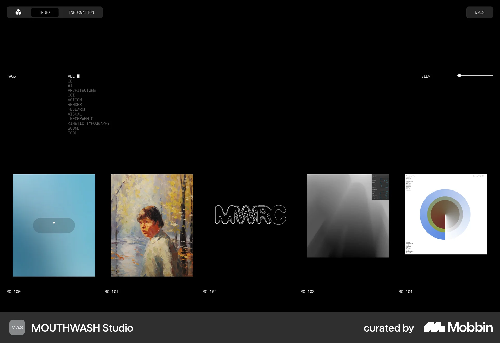
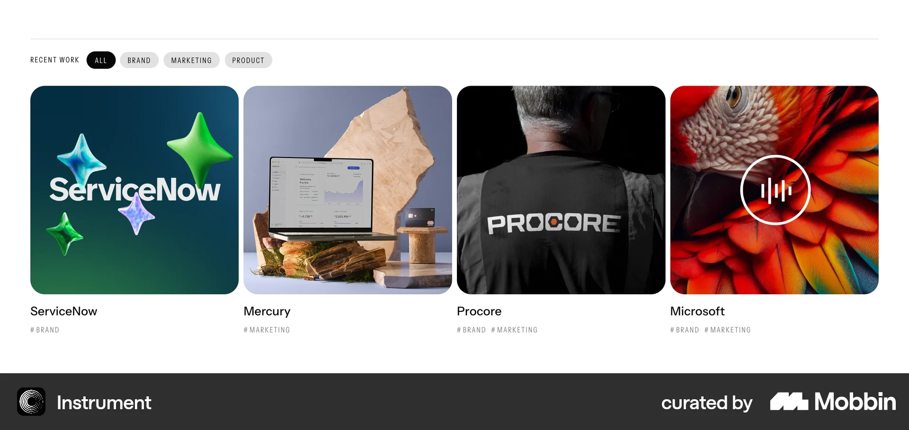
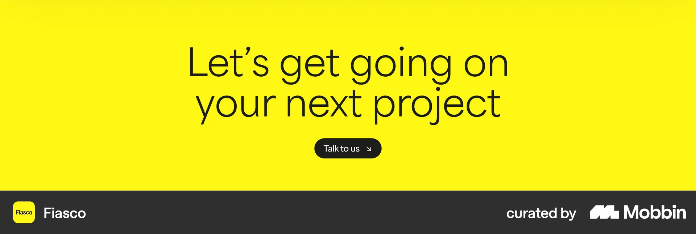
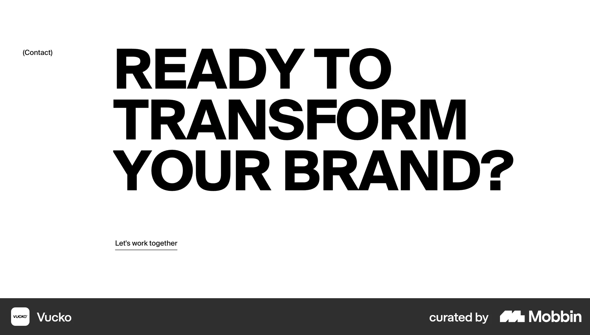
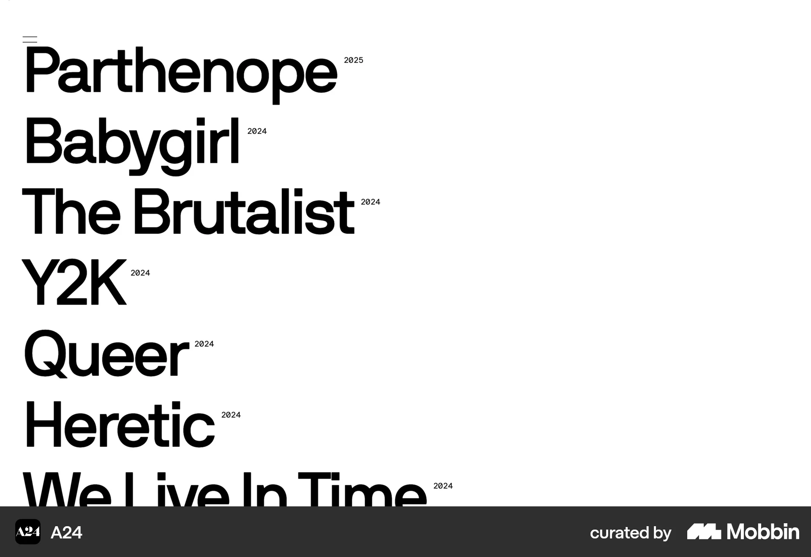
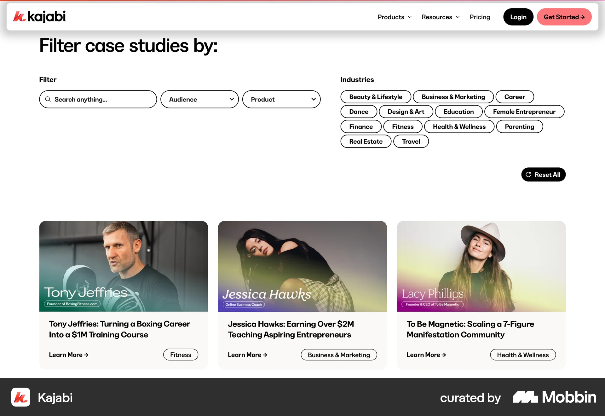

Media first, quiet controls, one open question.
Projects page research for Moriz Studio · 12–13 October 2026
Typographic filters, a three-word layout switch, deliberate editorial pairs, a hover and focus information layer, and a brand-red contact tile inside the grid.
Pinned intro beside a dense two-column grid of tall and short tiles. Adapt sticky controls and mixed heights; avoid hiding filters behind a button.

“Want to discuss a project? Get in touch” sits where browsing ends.

Service / Industry filters set as typography beside the heading.

Tag list and a quiet “View” density control above coded tiles.

Small pills with a filled selected state; quiet name and tag line under each tile.

Deliberate large/small offsets with one value sentence and small tags per project.

One question, one action, saturated colour.

Oversized question with a single understated link.

Huge titles with superscript metadata — inspires the hero count.

Dropdowns, search, reset and “Learn more” buttons read as a SaaS catalogue — avoid.
